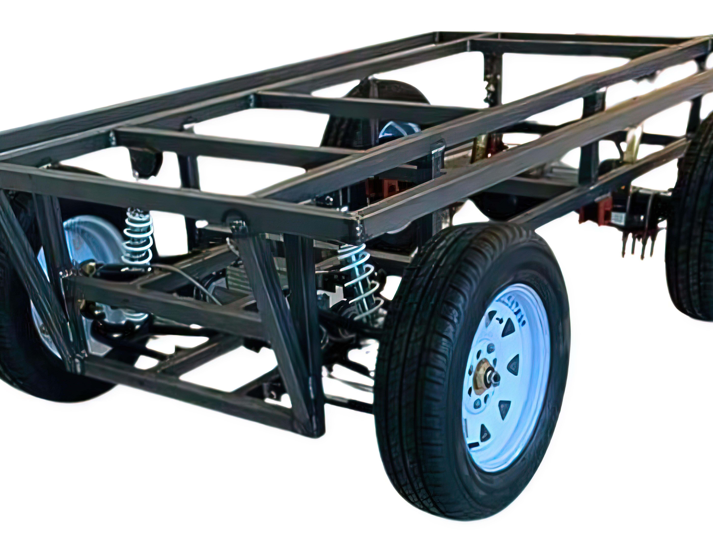
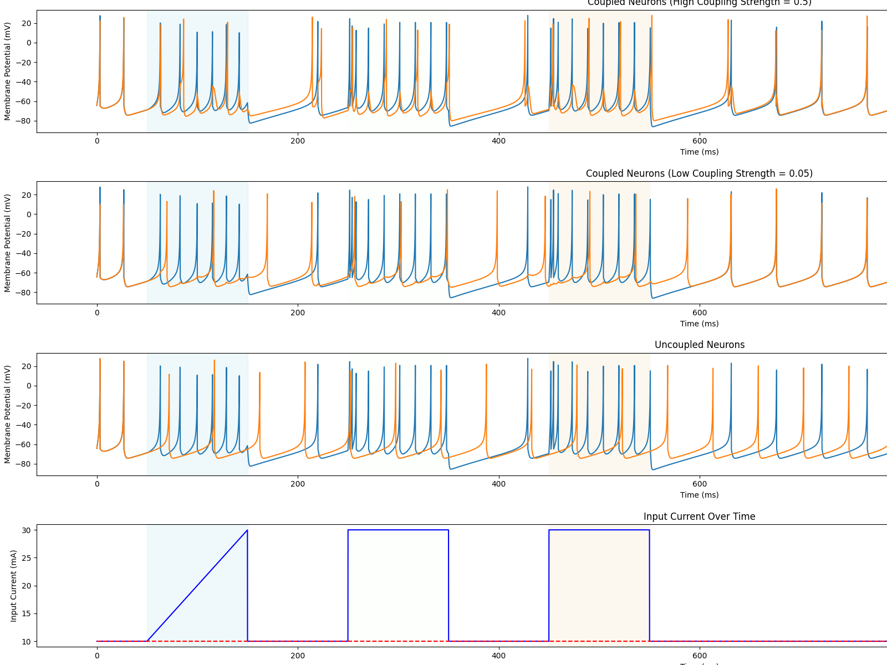
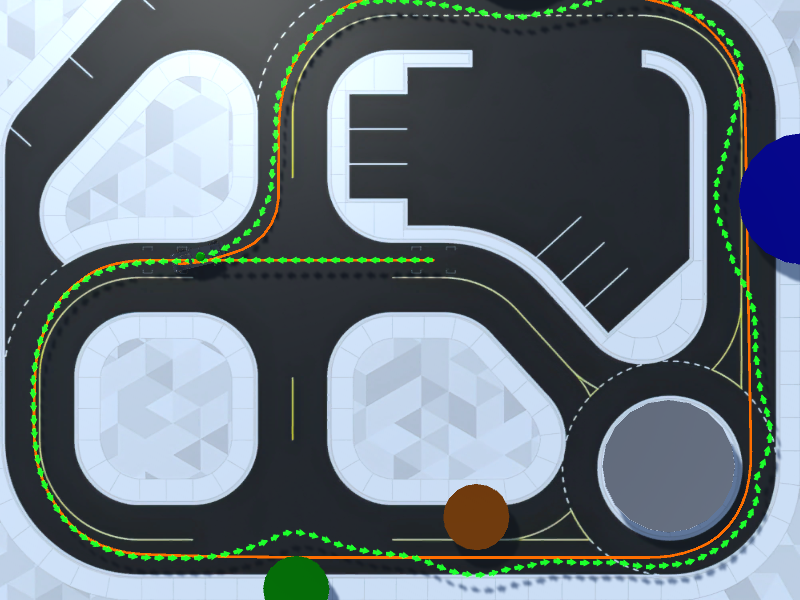

Doctor of Philosophy (PhD) in Engineering Sciences
2025 – 2028 expectedResearch topic: Neuromorphic Control Architectures for Autonomous Mobile Robots. Advisor: Dr. Jorge Antonio Reyes-Avendaño.
PhD Student, Engineering Sciences · Tecnológico de Monterrey, Campus Puebla
Neuromorphic Control Systems · Autonomous Mobile Robots · Explainable AI
I am a PhD student in Engineering Sciences at Tecnológico de Monterrey, Campus Puebla, advised by Dr. Jorge Antonio Reyes-Avendaño. My research develops neuromorphic control architectures — spiking neural networks and bio-inspired dynamical models — for autonomous mobile robots and ground vehicles, with a focus on explainability and safe validation in mixed-reality environments.
I hold a Master of Science in Engineering Sciences (GPA 97.30/100) and a B.Sc. in Mechatronics Engineering (GPA 94.85/100, Honorific Mention) from the same institution. Since 2022 I have led undergraduate teams in the AGV-Tec autonomous platform program, covering ECU PCB design, CAN bus communication, and SNN-based controllers.
See full list on Google Scholar. Citation counts as of April 2026.

Long-running development of an electric autonomous platform for material transport in confined industrial environments. Custom ECU PCBs, CAN-bus inter-ECU communication, and incremental progression toward full autonomy with LiDAR, RTK-GNSS, and SLAM.
PCB design · Embedded systems · CAN bus · LiDAR · SLAM · RTK

Bio-inspired explainable controller built from arrays of Hindmarsh–Rose and Izhikevich neurons for path tracking and obstacle evasion on Ackermann vehicles. Current work focuses on lightweight, event-driven implementations suitable for embedded and sim-to-real deployment.
Spiking neural networks · Python · snnTorch · Event-driven computing · Autonomous navigation

Augmented-reality test environment that overlays high-fidelity virtual scenes onto real sensor streams, enabling safe validation of autonomous-vehicle controllers without exposing hardware to dangerous traffic scenarios.
Mixed reality · Sensor fusion · Unity3D · Simulation
Pix2Pix-based saliency map generation from teaching slides and adaptive sensory-feedback learning systems for engineering students, in collaboration with the Mora-Salinas group.
Generative models · Computer vision · Adaptive learning
Research topic: Neuromorphic Control Architectures for Autonomous Mobile Robots. Advisor: Dr. Jorge Antonio Reyes-Avendaño.
Thesis: Design and Optimization of a Neuromorphic Controller for Ackermann Vehicles in Mixed Reality Environments.
"Academic Distinction" full scholarship recipient. Premio Ceneval a la Excelencia (EGEL Plus).
Python, C/C++, MATLAB, ROS / ROS2, PyTorch, snnTorch.
Custom PCB design and fabrication (ECU boards for AGV-Tec); embedded programming with CAN bus and microcontrollers; SolidWorks Certified Professional in Mechanical Design (C-LMXVT7AGP6).
Spiking neural networks (Hindmarsh–Rose, LIF, Izhikevich), neuroplasticity (STDP), diffusion models for data augmentation, computer vision for object detection and obstacle recognition, neuromorphic systems design, sim-to-real transfer, and event-driven computing. Azure Machine Learning Learning Path (Microsoft); IBM SkillsBuild — AI Foundation, Project Management Fundamentals, Blockchain Fundamentals; IBM Enterprise Design Thinking Practitioner and Team Essentials for AI.